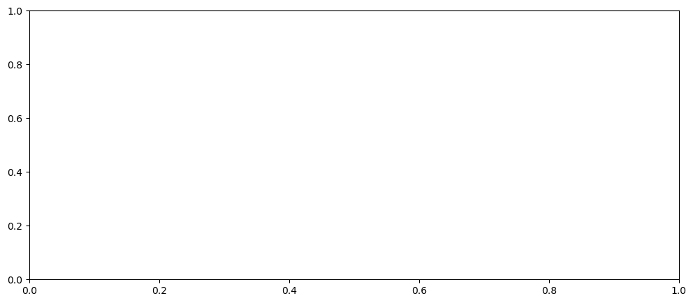

AMOCarray demo
The purpose of this notebook is to demonstrate the functionality of AMOCarray.
The demo is organised to show
Step 1: Loading and plotting a sample dataset
Step 2: Exploring the dataset attributes and variables.
Note that when you submit a pull request, you should clear all outputs from your python notebook for a cleaner merge.
[1]:
import pathlib
import sys
script_dir = pathlib.Path().parent.absolute()
parent_dir = script_dir.parents[0]
sys.path.append(str(parent_dir))
import xarray as xr
import os
import pooch
from amocarray import readers, writers, plotters, tools, utilities
/home/runner/work/amocarray/amocarray/amocarray/tools.py:192: SyntaxWarning: invalid escape sequence '\d'
fill_val = 2 ** (int(re.findall("\d+", str(new_dtype))[0]) - 1) - 1
[2]:
# Specify the path for writing datafiles
data_path = os.path.join(parent_dir, 'data')
[3]:
# Load data from data/moc_transports
ds = readers.load_sample_dataset()
print(ds)
Downloading file 'moc_vertical.nc' from 'https://www.dropbox.com/scl/fo/4bjo8slq1krn5rkhbkyds/AM-EVfSHi8ro7u2y8WAcKyw?rlkey=16nqlykhgkwfyfeodkj274xpc&dl=0/moc_vertical.nc' to '/home/runner/.cache/amocarray'.
---------------------------------------------------------------------------
ValueError Traceback (most recent call last)
Cell In[3], line 2
1 # Load data from data/moc_transports
----> 2 ds = readers.load_sample_dataset()
3 print(ds)
File ~/work/amocarray/amocarray/amocarray/readers.py:43, in load_sample_dataset(dataset_name)
41 def load_sample_dataset(dataset_name="moc_vertical.nc"):
42 if dataset_name in data_source_og.registry.keys():
---> 43 file_path = data_source_og.fetch(dataset_name)
44 return xr.open_dataset(file_path)
45 else:
File ~/micromamba/envs/TEST/lib/python3.13/site-packages/pooch/core.py:589, in Pooch.fetch(self, fname, processor, downloader, progressbar)
586 if downloader is None:
587 downloader = choose_downloader(url, progressbar=progressbar)
--> 589 stream_download(
590 url,
591 full_path,
592 known_hash,
593 downloader,
594 pooch=self,
595 retry_if_failed=self.retry_if_failed,
596 )
598 if processor is not None:
599 return processor(str(full_path), action, self)
File ~/micromamba/envs/TEST/lib/python3.13/site-packages/pooch/core.py:808, in stream_download(url, fname, known_hash, downloader, pooch, retry_if_failed)
806 with temporary_file(path=str(fname.parent)) as tmp:
807 downloader(url, tmp, pooch)
--> 808 hash_matches(tmp, known_hash, strict=True, source=str(fname.name))
809 shutil.move(tmp, str(fname))
810 break
File ~/micromamba/envs/TEST/lib/python3.13/site-packages/pooch/hashes.py:176, in hash_matches(fname, known_hash, strict, source)
174 if source is None:
175 source = str(fname)
--> 176 raise ValueError(
177 f"{algorithm.upper()} hash of downloaded file ({source}) does not match"
178 f" the known hash: expected {known_hash} but got {new_hash}. Deleted"
179 " download for safety. The downloaded file may have been corrupted or"
180 " the known hash may be outdated."
181 )
182 return matches
ValueError: SHA256 hash of downloaded file (moc_vertical.nc) does not match the known hash: expected sha256:3d3a40fc45102c4dbe32fcbd03d1ec19724495145d014c6d02a44b8413447d46 but got 40df3bc821df19dffcb3a86c6995c96ca19741af2c694d856ba9fc01e058f5aa. Deleted download for safety. The downloaded file may have been corrupted or the known hash may be outdated.
[4]:
plotters.show_contents(ds)
---------------------------------------------------------------------------
NameError Traceback (most recent call last)
Cell In[4], line 1
----> 1 plotters.show_contents(ds)
NameError: name 'ds' is not defined
[5]:
import matplotlib.pyplot as plt
fig, axes = plt.subplots(nrows=1, ncols=1, figsize=(12, 5))
# Plot stream function
ds['stream_function_mar'].plot(x='time', y='depth', cmap='viridis', ax=axes)
axes.set_title('Stream Function (MAR)')
axes.invert_yaxis()
plt.tight_layout()
plt.show()
---------------------------------------------------------------------------
NameError Traceback (most recent call last)
Cell In[5], line 6
3 fig, axes = plt.subplots(nrows=1, ncols=1, figsize=(12, 5))
5 # Plot stream function
----> 6 ds['stream_function_mar'].plot(x='time', y='depth', cmap='viridis', ax=axes)
7 axes.set_title('Stream Function (MAR)')
8 axes.invert_yaxis()
NameError: name 'ds' is not defined
